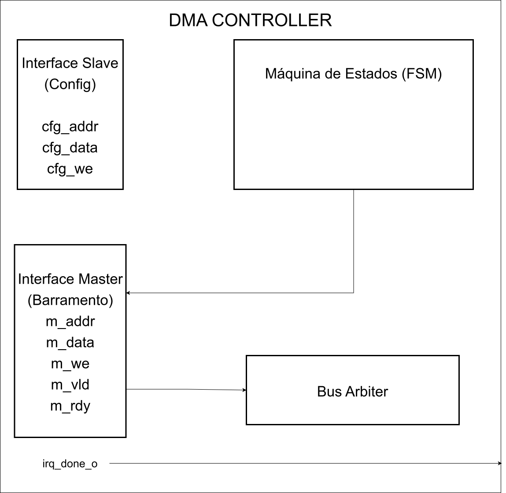
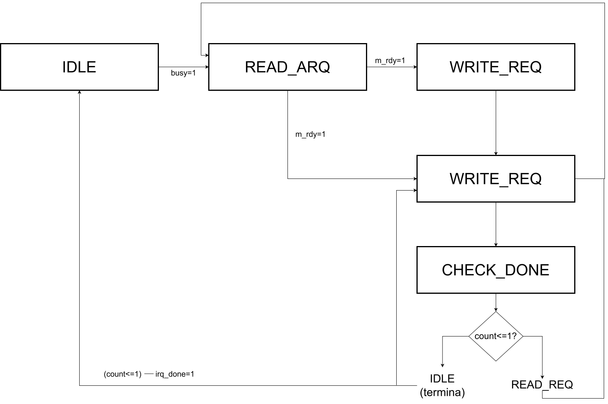
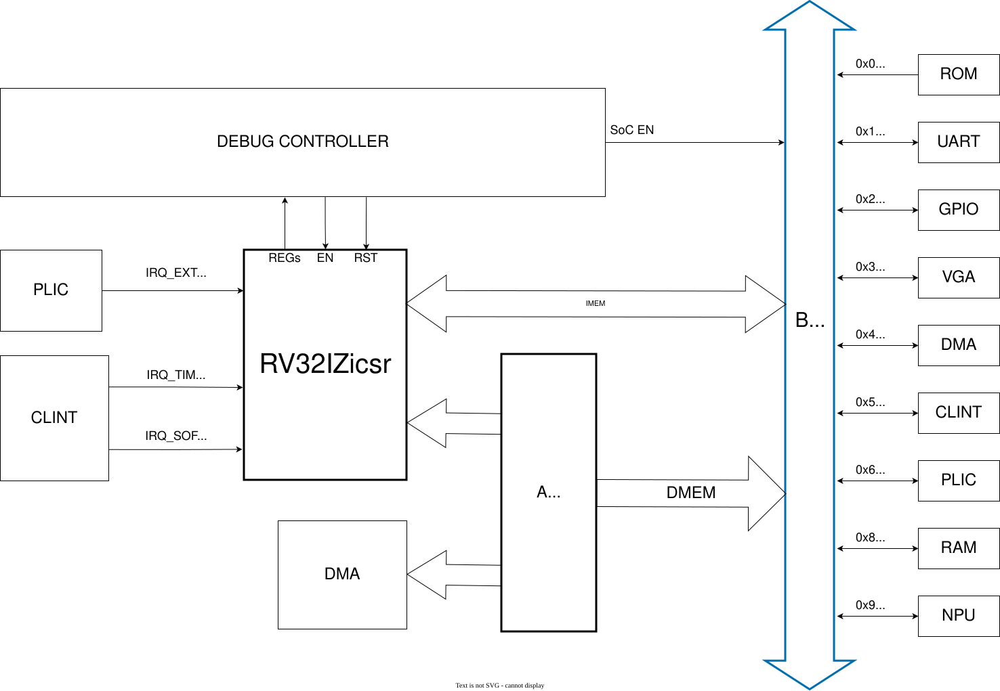

!!! warning Atualizar referência do link para documentação do barramento.
Organização do Espaço de Memória do SoC RISC-V
1. Espaço de Endereçamento
A arquitetura RV32I define um espaço de endereçamento linear de 32 bits, resultando em 4 GB (2³² bytes) de memória virtualmente endereçável. Este espaço é dividido em regiões distintas para memórias e periféricos, seguindo o modelo de Memory-Mapped I/O (MMIO) onde cada dispositivo é acessado através de endereços de memória específicos.
A organização deste espaço segue as convenções da especificação RISC-V, onde as regiões de memória principal (ROM e RAM) ocupam os extremos inferiores e superiores do mapa, enquanto os periféricos de I/O são mapeados em uma região intermediária.
1.1 Mapa de Endereços do SoC
A tabela abaixo apresenta o mapa de endereçamento completo do SoC, detalhando cada região de memória e periférico:
| Nome | Endereço Base | Endereço Final | Tamanho | Descrição |
|---|---|---|---|---|
| Boot ROM | 0x0000_0000 |
0x0000_0FFF |
4 KB | Memória apenas de leitura de inicialização (bootloader) |
| Reservado | 0x0000_1000 |
0x07FF_FFFF |
~128 MB | Espaço não utilizado |
| UART | 0x1000_0000 |
0x1000_FFFF |
64 KB | Controlador UART (comunicação serial) |
| GPIO | 0x2000_0000 |
0x2000_FFFF |
64 KB | Pinos de entrada/saída geral |
| VGA | 0x3000_0000 |
0x3001_FFFF |
128 KB | Controlador de vídeo (VRAM) |
| DMA | 0x4000_0000 |
0x4000_FFFF |
64 KB | Controlador DMA |
| CLINT | 0x5000_0000 |
0x5000_FFFF |
64 KB | Core Local Interrupt Controller |
| PLIC | 0x6000_0000 |
0x6003_FFFF |
256 KB | Platform-Level Interrupt Controller |
| Reservado | 0x7000_0000 |
0x7FFF_FFFF |
256 MB | Espaço não utilizado |
| RAM | 0x8000_0000 |
0x8003_FFFF |
256 KB | Memória RAM principal |
| Reservado | 0x8004_0000 |
0x8FFF_FFFF |
~255 MB | Espaço não utilizado |
| NPU | 0x9000_0000 |
0x9FFF_FFFF |
256 MB | Neural Processing Unit |
1.2 Decodificação de Endereços
A decodificação de endereços é realizada no módulo bus_interconnect.vhd, que utiliza os bits mais significativos (31-28) do endereço de 32 bits para identificar qual periférico ou memória deve responder à requisição. Esta abordagem permite uma decodificação rápida e simples, utilizando apenas 4 bits para selecionar entre até 16 regiões distintas.
O código VHDL a seguir demonstra a lógica de decodificação implementada:
dmem_slv <= SLV_ROM when dmem_addr_i(31 downto 28) = x"0" else
SLV_UART when dmem_addr_i(31 downto 28) = x"1" else
SLV_GPIO when dmem_addr_i(31 downto 28) = x"2" else
SLV_VGA when dmem_addr_i(31 downto 28) = x"3" else
SLV_DMA when dmem_addr_i(31 downto 28) = x"4" else
SLV_CLINT when dmem_addr_i(31 downto 28) = x"5" else
SLV_PLIC when dmem_addr_i(31 downto 28) = x"6" else
SLV_RAM when dmem_addr_i(31 downto 28) = x"8" else
SLV_NPU when dmem_addr_i(31 downto 28) = x"9" else
SLV_NONE;
É importante observar que as regiões 0x7 e 0xA até 0xF não são utilizadas nesta implementação, servindo como espaço reservado para futuras expansões.
2. Memórias
O SoC dispõe de duas memórias principais: a Boot ROM, que armazena o código de inicialização, e a RAM principal, utilizada para execução de programas e armazenamento de dados.
2.1 Boot ROM
A Boot ROM é uma memória apenas de leitura que armazena o bootloader do sistema. Ela é inicializada durante a síntese com o conteúdo de um arquivo HEX externo.
Características Técnicas
| Parâmetro | Valor |
|---|---|
| Tamanho | 4 KB (2¹⁰ palavras de 32 bits) |
| Tipo | Dual-port sincronizada |
| Porta A | Fetch de instruções (IMem) |
| Porta B | Leituras de dados (DMem) |
| Inicialização | Carrega conteúdo de arquivo .hex |
Interface de Sinais
A Boot ROM oferece duas portas de leitura independentes, permitindo acessos simultâneos:
port (
clk : in std_logic;
-- Porta A: Dedicada ao Fetch (Instruções)
vld_a_i : in std_logic;
addr_a_i : in std_logic_vector(31 downto 0);
data_a_o : out std_logic_vector(31 downto 0);
rdy_a_o : out std_logic;
-- Porta B: Dedicada ao LOAD/STORE (Dados)
vld_b_i : in std_logic;
addr_b_i : in std_logic_vector(31 downto 0);
data_b_o : out std_logic_vector(31 downto 0);
rdy_b_o : out std_logic
);
Inicialização via Arquivo
A ROM é inicializada através da função init_rom_from_file, que lê um arquivo no formato HEX:
impure function init_rom_from_file(file_name : string) return t_rom is
file f : text open read_mode is file_name;
variable l : line;
variable v_data : std_logic_vector(31 downto 0);
variable v_rom : t_rom := (others => (others => '0'));
begin
for i in 0 to (2**ADDR_WIDTH)-1 loop
exit when endfile(f);
readline(f, l);
hread(l, v_data);
v_rom(i) := v_data;
end loop;
return v_rom;
end function;
A síntese em FPGA utiliza atributos específicos do Vivado (Xilinx) para forçar a inferência de Block RAM:
- O atributo
ram_styleé uma sintaxe específica para síntese via Vivado da Xilinx - O valor
"block"força a utilização de BRAM (Block RAM) ao invés de distribuição (LUT RAM) - A utilização de BRAM adiciona latência de 1 ciclo de clock à leitura de dados (referência: UG473 - 7 Series Memory Resources)
2.2 RAM Principal
A RAM principal é uma memória de leitura e escrita utilizada para armazenamento temporário de dados e código durante a execução do programa.
Características Técnicas
| Parâmetro | Valor |
|---|---|
| Tamanho | 256 KB (2¹⁶ palavras de 32 bits) |
| Tipo | Dual-port com BRAM inferida |
| Largura de dados | 32 bits |
| Escrita | Byte-a-byte (WE de 4 bits) |
| Índices de acesso | addr(17 downto 2) (palavras) |
Interface de Sinais
generic (
ADDR_WIDTH : integer := 16; -- 256 KB
DATA_WIDTH : integer := 32
);
port (
clk : in std_logic;
-- Porta A
vld_a_i : in std_logic;
we_a : in std_logic_vector((DATA_WIDTH/8)-1 downto 0);
addr_a : in std_logic_vector(ADDR_WIDTH-1 downto 0);
data_a_i : in std_logic_vector(DATA_WIDTH-1 downto 0);
data_a_o : out std_logic_vector(DATA_WIDTH-1 downto 0);
rdy_a_o : out std_logic;
-- Porta B
vld_b_i : in std_logic;
we_b : in std_logic_vector((DATA_WIDTH/8)-1 downto 0);
addr_b : in std_logic_vector(ADDR_WIDTH-1 downto 0);
data_b_i : in std_logic_vector(DATA_WIDTH-1 downto 0);
data_b_o : out std_logic_vector(DATA_WIDTH-1 downto 0);
rdy_b_o : out std_logic
);
Escrita Byte-a-Byte
A RAM suporta escrita em granularidade de byte através de um vetor de Write Enable:
for i in 0 to (DATA_WIDTH/8)-1 loop
if we_b(i) = '1' then
ram(to_integer(unsigned(addr_b)))(8*i+7 downto 8*i) := data_b_i(8*i+7 downto 8*i);
end if;
end loop;
Cada bit do vetor WE (4 bits para dados de 32 bits) controla um byte específico, permitindo escrita em 1, 2, 3 ou 4 bytes individualmente.
Relação com a LSU e Endianness
O Load Store Unit (LSU) é a unidade responsável por formatar os acessos à memória de dados. Ela decodifica o campo Funct3 das instruções para gerar os Byte Enables corretos:
| Instrução | Tamanho | Byte Enables |
|---|---|---|
SB |
1 byte | "0001", "0010", "0100" ou "1000" |
SH |
2 bytes | "0011" (bytes 0-1) ou "1100" (bytes 2-3) |
SW |
4 bytes | "1111" |
A LSU utiliza os bits menos significativos do endereço (addr(1:0)) para determinar qual byte escrever:
-- Store Byte: Seleção por endereço (little-endian)
case s_addr_lsb is
when "00" => DMem_we_o <= "0001"; -- Byte 0 (bits 7:0)
when "01" => DMem_we_o <= "0010"; -- Byte 1 (bits 15:8)
when "10" => DMem_we_o <= "0100"; -- Byte 2 (bits 23:16)
when "11" => DMem_we_o <= "1000"; -- Byte 3 (bits 31:24)
end case;
Este SoC utiliza endianness little-endian:
- Endereço com LSB=00 → byte menos significativo (bits [7:0])
- Endereço com LSB=11 → byte mais significativo (bits [31:24])
Essa arquitetura permite que o software escreva bytes individuais sem afetar os demais bytes da palavra, essencial para operações de strings e comunicação com periféricos.
3. Registradores de Periféricos via MMIO
3.1 Conceito: MMIO vs CSRs Internos do Core
Existem duas formas distintas de comunicação entre software e hardware neste SoC:
CSRs Internos do Core (RISC-V Privileged)
São registradores dentro do núcleo processador que controlam interrupções, traps e modo de execução. São acessados via instruções CSR dedicadas (csrrw, csrrs, csrrc) e ocupam um espaço de endereçamento separado de 12 bits (endereços 0x300-0x344). Esses registradores fazem parte da arquitetura RISC-V Privileged e são implementados no módulo csr_file.vhd.
Registradores de Periféricos via MMIO
São registradores fora do núcleo, mapeados no espaço de memória endereçável. Cada periférico expõe seus registradores de controle e dados em endereços específicos dentro do mapa de memória. O software acessa esses registradores usando instruções normais de load e store. Isso vai de encontro à filosofia básica de arquiteturas RISC.
Esta seção documenta os registradores MMIO dos periféricos. Para os CSRs internos do core, consulte a Seção 6: CSRs Internos do Core RISC-V.
3.2 Arquitetura de Acesso a Periféricos
No SoC, periféricos são acessados como posições de memória através de Memory-Mapped I/O (MMIO):
| Intervalo de Endereço | Descrição / Periférico |
|---|---|
0x0000_0000 - 0x0FFF_FFFF |
Memórias (ROM) e Reservado |
0x1000_0000 |
UART |
0x2000_0000 |
GPIO |
0x3000_0000 |
VGA |
0x4000_0000 |
DMA |
0x5000_0000 |
CLINT |
0x6000_0000 |
PLIC |
0x8000_0000 |
RAM |
0x9000_0000 |
NPU |
A CPU configura e lê periféricos usando instruções normais de memória:
// Escrita: configurar source address do DMA
DMA_SRC_ADDR = (uint32_t)buffer_src; // sw do compilador: store
// Leitura: verificar status da UART
status = UART_CTRL; // sw do compilador: load
3.3 BSP: Macros de Acesso
O Board Support Package (BSP) fornece macros para acesso volátil:
#define MMIO32(addr) (*(volatile uint32_t *)(addr))
#define MMIO8(addr) (*(volatile uint8_t *)(addr))
Note
A palavra-chave volatile garante que o compilador não otimize away acessos consecutivos ao mesmo endereço, essencial para registradores de status que mudam de valor.
3.4 Tabela Consolidada de Registradores MMIO
A seguir, todos os registradores mapeados em memória de cada periférico do SoC.
UART (0x1000_0000)
Controlador de comunicação serial UART.
| Offset | Nome | Acesso | Descrição |
|---|---|---|---|
0x00 |
DATA |
RW | Registrador de dados TX/RX |
0x04 |
CTRL |
RW | Registrador de controle e status |
Definições de bits do registrador CTRL:
#define UART_STATUS_TX_BUSY (1 << 0) // Transmissor ocupado
#define UART_STATUS_RX_VALID (1 << 1) // Dado RX disponível
#define UART_CMD_RX_POP (1 << 0) // Comando: remover dado
#define UART_CMD_RX_FLUSH (1 << 2) // Comando: limpar buffer
GPIO (0x2000_0000)
Controlador de pinos de entrada/saída de propósito geral.
| Offset | Nome | Acesso | Descrição |
|---|---|---|---|
0x00 |
DATA |
RW | Leituras de chaves (switches) e escritas nos LEDs |
VGA (0x3000_0000)
Controlador de vídeo VGA com frame buffer de 320x240 pixels.
| Offset | Nome | Acesso | Descrição |
|---|---|---|---|
0x00000 - 0x1FFFC |
FRAME_BUFFER |
RW | Pixels do frame buffer (24 bits/pixel) |
0x1FFFE |
VSYNC |
RW | Registrador de sincronização vertical |
CLINT (0x5000_0000)
Core Local Interrupt Controller - Gerencia interrupções de timer e software localmente.
| Offset | Nome | Acesso | Descrição |
|---|---|---|---|
0x00 |
MSIP |
RW | Machine Software Interrupt Pending |
0x08 |
MTIMECMP_LO |
RW | Timer Compare Low (32 bits inferiores) |
0x0C |
MTIMECMP_HI |
RW | Timer Compare High (32 bits superiores) |
0x10 |
MTIME_LO |
RW | Timer Value Low |
0x14 |
MTIME_HI |
RW | Timer Value High |
O timer de 64 bits é implementado como dois registradores de 32 bits, permitindo contagens superiores a 4 segundos a 100 MHz.
PLIC (0x6000_0000)
Platform-Level Interrupt Controller - Gerencia prioridades e roteamento de interrupções externas.
| Offset | Nome | Acesso | Descrição |
|---|---|---|---|
0x000000 |
PRIORITY |
RW | Prioridade das fontes de interrupção (escalável por ID) |
0x001000 |
PENDING |
RO | Bitmap de interrupções pendentes (bits 0-31) |
0x002000 |
ENABLE |
RW | Habilita interrupções por fonte |
0x200000 |
THRESHOLD |
RW | Limiar de prioridade (interrupções abaixo são ignoradas) |
0x200004 |
CLAIM |
RW | Claim: lê fonte; Complete: marca como tratada |
DMA (0x4000_0000)
Direct Memory Access Controller - Transferência de dados autônoma entre memória e periféricos.
| Offset | Nome | Acesso | Descrição |
|---|---|---|---|
0x00 |
SRC_ADDR |
RW | Endereço de origem (RAM) |
0x04 |
DST_ADDR |
RW | Endereço de destino (RAM ou periférico) |
0x08 |
COUNT |
RW | Número de palavras de 32 bits a transferir |
0x0C |
CONTROL |
RW | Bits de controle e status |
Bits do registrador CONTROL:
| Bit | Nome | Acesso | Descrição |
|---|---|---|---|
| 0 | START | RW | Escreve 1 para iniciar transferência; hardware limpa ao completar |
| 1 | FIXED_DST | RW | 1 = destino fixo (FIFO mode), 0 = incremento automático |
| 2 | BUSY | RO | 1 = transferência em andamento |
NPU (0x9000_0000)
Neural Processing Unit - Acelerador de hardware para operações de redes neurais.
| Offset | Nome | Acesso | Descrição |
|---|---|---|---|
0x00 |
STATUS |
RO | Flags de status (BUSY, DONE, OUT_VLD) |
0x04 |
CMD |
WO | Comandos de controle (START, RST_PTRS) |
0x08 |
CONFIG |
RW | Dimensão K da matriz |
0x10 |
WRITE_W |
WO | Porta de escrita de pesos |
0x14 |
WRITE_A |
WO | Porta de escrita de ativações |
0x18 |
READ_OUT |
RO | Porta de leitura de resultados |
0x40 |
QUANT_CFG |
RW | Configuração de quantização (shift, zero-point) |
0x44 |
QUANT_MULT |
RW | Multiplicador PPU |
0x48 |
FLAGS |
RW | Flags de controle (ReLU) |
0x80 |
BIAS_BASE |
RW | Endereço base do vetor de bias |
Bits de status (STATUS):
#define NPU_STATUS_BUSY (1 << 0) // Operação em andamento
#define NPU_STATUS_DONE (1 << 1) // Operação concluída
#define NPU_STATUS_OUT_VLD (1 << 3) // Saída válida disponível
Bits de comando (CMD):
#define NPU_CMD_RST_PTRS (1 << 0) // Reseta ponteiros internos
#define NPU_CMD_START (1 << 1) // Inicia execução
#define NPU_CMD_ACC_CLEAR (1 << 2) // Limpa acumuladores
#define NPU_CMD_ACC_NO_DRAIN (1 << 3) // Mantém resultado no array (tiling)
4. Controlador DMA
4.1 Gargalo de Desempenho: Transferência por Polling/Busy-Wait
O Problema da Cópia por Software
Quando o processador RISC-V executa uma cópia de memória via software (load/store em loop), cada palavra transferida consome ciclos de CPU que poderiam ser utilizados para outras tarefas. Para uma transferência de 256 KB (tamanho total da RAM principal):
Palavras de 32 bits em 256 KB = 262.144 / 4 = 65.536 palavras
Ciclos consumidos por iteração do loop (estimativa realista para multi-cycle):
├── LOAD do endereço fonte: ~3 ciclos (inclui wait states)
├── STORE no endereço destino: ~3 ciclos (inclui wait states)
├── Incremento de ponteiros: ~2 ciclos
└── Atualização de contador: ~2 ciclos
──────────
Total por palavra transferida: ~10 ciclos
Total para 256 KB: 65.536 × 10 ≈ 655.360 ciclos de CPU
Nota sobre Gargalo de Von Neumann (Memory Wall)
A arquitetura RV32I_Zicsr deste SoC é uma FSM multi-cycle (não pipeline), onde cada instrução consome múltiplos ciclos de clock. O memory wall (gargalo de von Neumann) é o fenômeno onde a velocidade da memória não acompanha a velocidade do processador, criando um limite de desempenho fundamental.
Note
Para benchmarks reais de throughput de memória, consulte: NPU Benchmark e Systolic Array.
Nesta estimativa, consideramos ~3 ciclos por LOAD/STORE, representando wait states típicos em acessos à memória de dados (DMem) com handshake de-ready.
Durante esses aproximadamente 655.000 ciclos, o processador fica indisponível para:
- Processamento de interrupções UART (podendo perder dados)
- Atualização de timers e agendamento
- Manipulação de outros periféricos
- Execução de lógica de aplicação
Impacto no Throughput do Sistema
| Cenário | Tempo (100 MHz) | Ciclos CPU | Utilização CPU |
|---|---|---|---|
| Cópia 256 KB via CPU (busy-wait) | 6,55 µs | 655.360 | 100% |
| Cópia 256 KB via DMA | ~0,65 µs (efetivo) | ~6 | 0% (livre) |
A CPU poderia utilizar esses ~655.000 ciclos economizados para:
- Processar ~3.000 interrupções UART (200 ciclos cada)
- Executar ~80.000 operações aritméticas inteiras
- Atender múltiplas requisições de software
4.2 Visão Geral do DMA
O Direct Memory Access (DMA) é um controlador que permite transferência de dados entre memória e periféricos sem intervenção do núcleo de processamento. Enquanto a CPU configura a transferência, o DMA executa a cópia de dados de forma autônoma, permitindo que o processador execute outras tarefas em paralelo.
O DMA deste SoC opera em modo 1D (linear), transferindo um bloco contíguo de palavras de 32 bits de uma região de memória para outra. A arquitetura dual-interface permite que o DMA seja simultaneamente slave (configurado pela CPU) e master (acesso autônomo ao barramento).
4.3 Microarquitetura do Controlador DMA
O DMA possui uma arquitetura dual-interface:
- Interface Slave (cfg_*): Utilizada pela CPU para configurar registradores de controle
- Interface Master (m_*): Utilizada para acessar o barramento de memória de forma autônoma

4.4 Registradores de Configuração
Estes registradores estão documentados na Seção 3.4. Resumo:
| Offset | Nome | Tamanho | Descrição |
|---|---|---|---|
0x00 |
SRC_ADDR |
32 bits | Endereço de origem (RAM) |
0x04 |
DST_ADDR |
32 bits | Endereço de destino (RAM ou periférico) |
0x08 |
COUNT |
32 bits | Número de palavras de 32 bits a transferir |
0x0C |
CONTROL |
32 bits | Bits de controle e status |
Detalhamento do Registrador CONTROL
| Bit | Nome | Acesso | Descrição |
|---|---|---|---|
| 0 | START | RW | Escreve 1 para iniciar transferência; hardware limpa ao completar |
| 1 | FIXED_DST | RW | 1 = destino fixo (FIFO mode), 0 = incremento automático |
| 2 | BUSY | RO | 1 = transferência em andamento |
4.5 Máquina de Estados
O DMA implementa uma FSM (Finite State Machine) com os seguintes estados:
type state_type is (
IDLE, -- Ocioso, aguardando START
READ_REQ, -- Requisição de leitura da origem
READ_WAIT, -- Espera intermediária para arbiter
WRITE_REQ, -- Requisição de escrita no destino
CHECK_DONE -- Verifica se transferência terminou
);
Diagrama de Estados

Descrição dos Estados
IDLE: Estado inicial. O DMA aguarda até que a CPU escreva 1 no bit START do registrador CONTROL. Quando ativado, levanta a flag r_busy e transita para READ_REQ se r_count > 0.
READ_REQ: Coloca o endereço r_src_addr no barramento (m_addr_o) e levanta o sinal m_vld_o indicando uma requisição de leitura. Permanece neste estado até que m_rdy_i seja asserted pelo arbiter. Quando pronto, captura o dado em m_data_i para o buffer interno.
READ_WAIT: Estado de espera intermediário onde m_vld_o é baixado por um ciclo. Esta pausa é necessária para que o bus_arbiter possa sair do estado de travamento (WAIT_M1) e aceitar a nova requisição de escrita no próximo ciclo.
WRITE_REQ: Coloca o endereço r_dst_addr e o dado do buffer no barramento, levantando simultaneamente m_vld_o e m_we_o. Aguarda confirmação do arbiter via m_rdy_i.
CHECK_DONE: Incrementa r_src_addr (+4 bytes) e aplica a lógica de destino:
- Se FIXED_DST = 0: incrementa r_dst_addr (+4 bytes)
- Se FIXED_DST = 1: mantém r_dst_addr fixo (modo FIFO)
Se r_count atingir 1 ou 0, a transferência está completa: transita para IDLE e_assert irq_done_o. Caso contrário, retorna para READ_REQ.
4.6 Modo Destino Fixo (FIFO Mode)
Quando o bit FIXED_DST está setado, o endereço de destino permanece constante durante toda a transferência. Este modo é essencial para periféricos com interface FIFO, como a NPU:
if r_ctrl_fixed_dst = '0' then
r_dst_addr <= r_dst_addr + 4; -- Incrementa para próximo endereço
else
-- Mantém destino fixo (FIFO mode)
end if;
4.7 Exemplo de Uso em Software
Transferência Memória-para-Memória
// Transferir 1024 palavras de buf_src para buf_dst
DMA_SRC_ADDR = (uint32_t)buf_src; // Endereço de origem
DMA_DST_ADDR = (uint32_t)buf_dst; // Endereço de destino
DMA_COUNT = 1024; // 1024 palavras (4 KB)
DMA_CONTROL = 0x01; // START = 1
// Aguardar conclusão via polling
while (DMA_CONTROL & 0x04); // Espera BUSY=0
Transferência para NPU (FIFO Mode)
// Enviar pesos para a NPU (endereço fixo)
DMA_SRC_ADDR = weights_buffer; // Endereço dos pesos
DMA_DST_ADDR = NPU_BASE_ADDR + 0x10; // WRITE_W da NPU
DMA_COUNT = K_DIM * K_DIM; // K² palavras
DMA_CONTROL = 0x03; // START | FIXED_DST
// Poll ou interrupção quando concluído
while (DMA_CONTROL & 0x04); // Aguarda BUSY=0
// Iniciar execução da NPU após carregamento
NPU_CMD = NPU_CMD_START;
4.8 Interação com o Bus Arbiter
O DMA compartilha o barramento de dados com a CPU através de um bus_arbiter. Este componente implementa uma política de prioridade fixa onde:
Política de Arbitragem: DMA > CPU
O DMA possui prioridade fixa sobre a CPU. Quando ambos os mestres solicitam acesso simultâneo, o DMA ganha automaticamente a concessão.
- Prioridade DMA: Se ambos solicitam, DMA ganha a concessão
- Espera: O DMA pode ser pausado a qualquer momento pela CPU (retorno de ready)
- READ_WAIT: Estado introduzido para resolver problema de handshaking onde o arbiter ficava travado entre requisições
4.9 Eficiência do Sistema: Liberação do Núcleo RISC-V
Análise Comparativa de Ciclos
Nota: Modelo Baseline Multi-cycle
Esta análise usa um modelo baseline multi-cycle baseado na arquitetura real do RV32I_Zicsr, onde LOAD/STORE consomem ~3 ciclos cada (incluindo wait states de memória).
A tabela a seguir compara os recursos consumidos pela CPU entre os dois métodos de transferência:
| Método | Ciclos CPU | Ciclos Totais (DMA) | CPU Disponível |
|---|---|---|---|
| Busy-Wait (256 KB) | 655.360 | 655.360 | 0% |
| DMA (256 KB) | ~6 | 655.360 | 99,99% |
Detalhamento dos ciclos de CPU com DMA:
Configuração: 4 writes × 1 ciclo = 4 ciclos
Poll/Interrupção: ~2 verificações × 1 = 2 ciclos
─────────
Total CPU: ~6 ciclos
Otimização do DMA vs CPU Multi-cycle
DMA vs CPU
Enquanto o modelo multi-cycle da CPU requer ~10 ciclos para uma operação de LOAD seguida de STORE (incluindo overhead), a DMA realiza a mesma transferência através de sua FSM dedicada em apenas ~4 ciclos por palavra, representando uma redução de ~60% nos ciclos de transferência.
| Componente | Estados FSM | Ciclos/Palavra | Observação |
|---|---|---|---|
| DMA | READ_REQ → READ_WAIT → WRITE_REQ → CHECK_DONE | ~4 | Sem fetch de instruções |
| CPU | LOAD + STORE + overhead | ~10 | Com fetch+execute+wb |
O DMA é otimizado para transferências massivas de dados pois: 1. Não gasta ciclos com fetch de instruções 2. Não precisa write-back em registradores 3. FSM dedicada com transição contínua entre palavras
Ganho de Eficiência
Para uma transferência de 256 KB:
Ciclos economizados = 655.360 - 6 = 655.354 ciclos
Taxa de liberação = 655.354 / 655.360 × 100 ≈ 99,999%
Oportunidades de Paralelismo
Interrupções com e sem DMA
Interrupções são mecanismos de hardware que desviam a execução para um handler especial, independente do método de transferência de dados. Com ou sem DMA, interrupções são atendidas (a menos que explicitamente desabilitadas via mstatus.MIE). A diferença é que, sem DMA, a CPU fica em busy-wait e não pode executar outras tarefas úteis durante a transferência.
Com o DMA em operação, a CPU pode executar concorrentemente:
- Processamento de dados anteriores — já processa o bloco N-1 enquanto o bloco N é transferido
- Execução de código útil — não fica bloqueada em loop de cópia
- Tarefas de controle — lógica de aplicação continua executando
Tempo ─────────────────────────────────────────────────────────────────────►
CPU: [Config DMA][ Poll ][Processa][Processa][Processa][Processa]
│ │ │ │ │ │
DMA: [ ══════════════ 256KB ══════════════ ] [Done]
│ │ │ │ │
└───────┴───────────────────┴─────────┴─────────┘
~6 ciclos ~655.000 ciclos livres
RESULTADO: CPU livre para executar outras ~655.000+ instruções
Resumo: Benefícios Arquiteturais do DMA
| Aspecto | Sem DMA | Com DMA |
|---|---|---|
| Ciclos CPU (256 KB) | 655.360 | ~6 |
| Disponibilidade da CPU | 0% durante cópia | 99,99% |
| Latência outras tarefas | Bloqueadas | Executam em paralelo |
| Throughput do barramento | Competição impossível | Arbiter gerencia |
| Perda de interrupções | Alta probabilidade | Mínima |
5. Arquitetura do Sistema de Barramentos
5.1 Visão Geral da Interconexão
O SoC implementa uma arquitetura de barramentos hierárquica com três canais distintos:
- Canal de Instruções (IMem): Acesso exclusivo à memória de instruções (ROM/RAM)
- Canal de Dados (DMem): Acesso a memória e periféricos via arbiter
- Canal CSR: Acesso dedicado aos registradores de controle do processador
Esta separação permite que fetch de instruções e acessos a dados ocorram simultaneamente, aumentando o throughput do sistema.
5.2 Topologia de Barramentos

5.3 Bus Arbiter
O bus_arbiter resolve conflitos entre CPU e DMA no canal de dados, implementando arbitragem baseada em prioridades fixas:
Política de Arbitragem: DMA > CPU
O DMA possui prioridade fixa sobre a CPU. Quando ambos os mestres solicitam acesso simultâneo, o DMA ganha a concessão automaticamente.
Máquina de Estados (FSM)
| Estado | Descrição |
|---|---|
| IDLE | Nenhum mestre acessando. Monitora requisições. Se ambos solicitam, DMA ganha. |
| GRANT_M1 | Concessão para DMA. Roteia sinais do DMA para o escravo. |
| GRANT_M0 | Concessão para CPU. Roteia sinais da CPU para o escravo. |
| WAIT_M1/M0 | Espera de segurança. Aguarda o mestre baixar o sinal Valid antes de liberar. |
Algoritmo de Arbitragem
-- IDLE: Prioridade DMA > CPU
if m1_vld_i = '1' then
next_state <= GRANT_M1; -- DMA solicita: aloca para DMA
elsif m0_vld_i = '1' then
next_state <= GRANT_M0; -- CPU solicita: aloca para CPU
end if;
5.4 Bus Interconnect
O bus_interconnect realiza a decodificação de endereços e roteamento de dados. Para cada requisição:
- Extrai os bits de seleção de periférico (31-28)
- Identifica o slave correspondente
- Roteia os sinais de endereço, dados e controle
- Multiplexa o dado de resposta ao master
!!! info Mais informações sobre o barramento em Barramento: Mestres e Escravos .